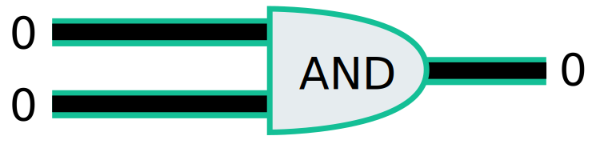
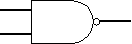
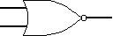
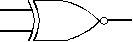

- The logic gates are the main structural part of a digital system.
- Logic Gates are a block of hardware that produces signals of binary 1 or 0 when input logic requirements are satisfied.
- Each gate has a distinct graphic symbol, and its operation can be described by means of algebraic expressions
- The seven basic logic gates includes: AND, OR, XOR, NOT, NAND, NOR, and XNOR.
- The relationship between the input-output binary variables for each gate can be represented in tabular form by a truth table.
- Each gate has one or two binary input variables designated by A and B and one binary output variable designated by x.
Logic Gate

Types of logic Gate
- AND
- OR/XOR
- NOT
- NAND
- NOR
- EOR
- XNOR
AND gate
The AND gate is so named because, if 0 is called "false" and 1 is called "true," the gate acts in the same way as the logical "and" operator. The following illustration and table show the circuit symbol and logic combinations for an AND gate. (In the symbol, the input terminals are at left and the output terminal is at right.) The output is "true" when both inputs are "true." Otherwise, the output is "false." In other words, the output is 1 only when both inputs one AND two are 1.
All other logic gates operate on multiple inputs. The AND gate accepts two wires, and if both of those wires are "on" (representing
1), it outputs 1:

If either of those wires are "off" (representing 0), then it outputs0:
One way to understand Boolean operations is to make a truth table of all the possible inputs and outputs. Here's a truth table for the AND gate:
| Input A | Input B | output |
|---|---|---|
| 1 | 1 | 1 |
| 1 | 0 | 0 |
| 0 | 1 | 0 |
| 0 | 0 | 0 |
OR gate
The OR gate gets its name from the fact that it behaves after the fashion of the logical inclusive "or." The output is "true" if either or both of the inputs are "true." If both inputs are "false," then the output is "false." In other words, for the output to be 1, at least input one OR two must be 1. The OR logic gate accepts two inputs,and as long as either if those inputs is a 1,it outputs a 1:

Let's look at the truth table for OR gates:
| InputA | InputB | Output |
|---|---|---|
| 1 | 1 | 1 |
| 1 | 0 | 1 |
| 0 | 1 | 1 |
| 0 | 0 | 0 |

NOT Gate
The simplest gate is the NOT gate, also known as an inverter. It accepts a single input and outputs the opposite value. If the input is 0, output is 1:

If the input is 1,the output is 0:

NAND Gate
The NAND gate operates as an AND gate followed by a NOT gate. It acts in the manner of the logical operation "and" followed by negation. The output is "false" if both inputs are "true." Otherwise, the output is "true."
| Input1 | Input2 | Output |
|---|---|---|
| 0 | 0 | 1 |
| 0 | 1 | 1 |
| 1 | 0 | 1 |
| 1 | 1 | 0 |
NOR Gate
The NOR gate is a combination OR gate followed by an inverter. Its output is "true" if both inputs are "false." Otherwise, the output is "false."
| Input1 | Input2 | Output |
|---|---|---|
| 0 | 0 | 1 |
| 0 | 1 | 0 |
| 1 | 0 | 0 |
| 1 | 1 | 0 |
XNOR Gate
The output of XNOR Gate is ‘High’ if both the inputs are ‘High’ or if both the inputs are ‘Low’. The output is ‘Low’ if either of the input is ‘Low’
| Input1 | Input2 | Output |
|---|---|---|
| 0 | 0 | 1 |
| 0 | 1 | 0 |
| 1 | 0 | 0 |
| 1 | 1 | 1 |